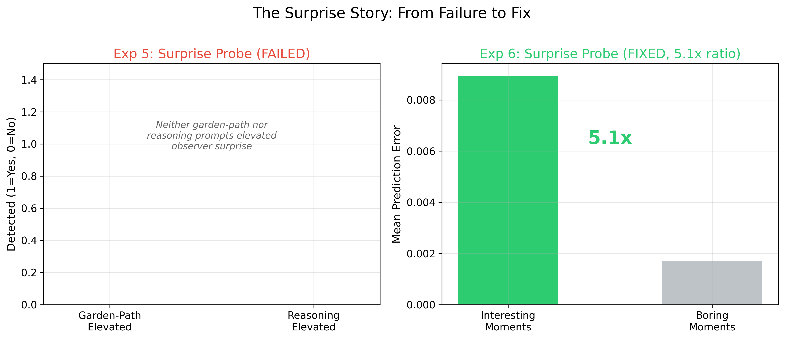
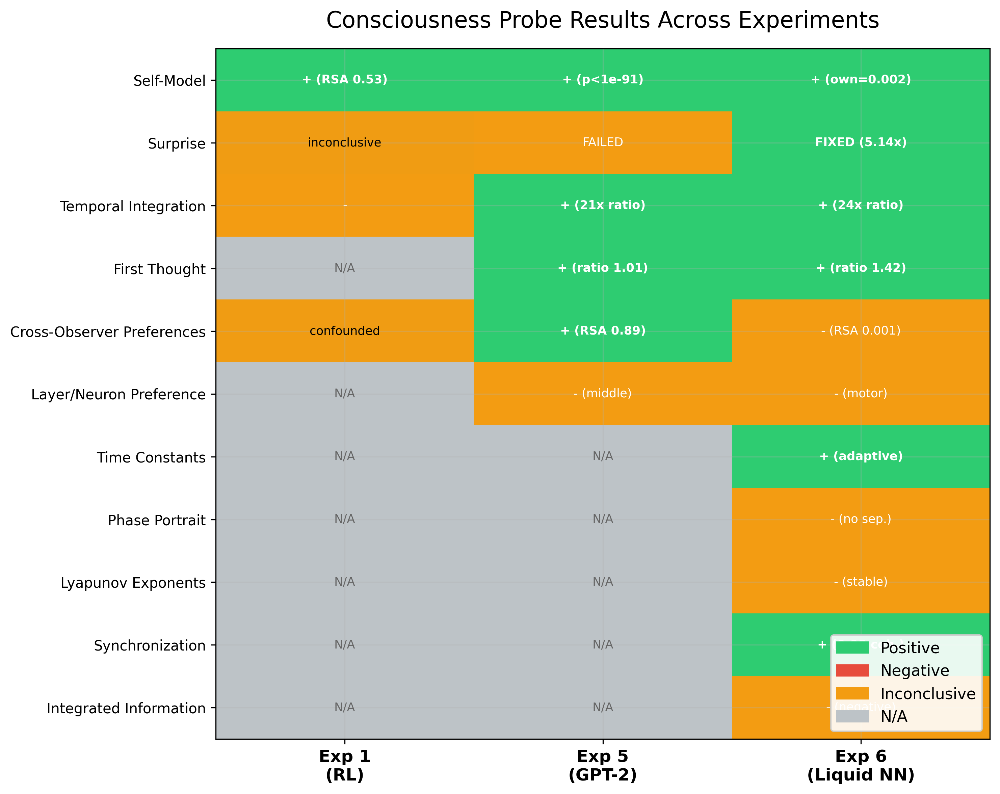
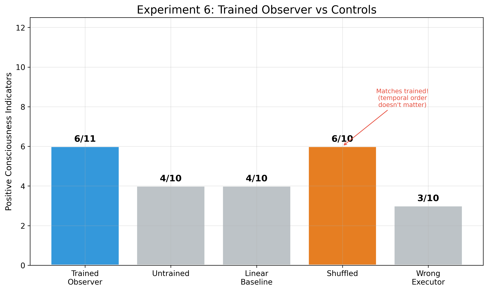

What if consciousness is not the thinker, but the watcher?
A computational theory of consciousness, tested across 4 AI substrates
The Question
If your thoughts are determined by prior physical causes, if your brain decides before you know, if your explanations are confabulated after the fact...
What role does consciousness play?
We propose an answer: you are the observer. Not the system that thinks, decides, and acts, but the system that watches all of that happen.
The Hypothesis
The executor never receives feedback from the observer. The observer never modifies the executor's weights, states, or decisions. This one-way information flow is the architectural equivalent of the philosophical claim: consciousness observes but does not cause.
The Experiments
Six experiments across four AI substrates, testing whether observers develop consciousness-like properties.
Self-model detected (RSA = 0.53). CartPole too simple for other probes. Proof of concept: observation alone produces executor-specific representations.
When the executor is perturbed mid-episode, does the observer confabulate a coherent explanation? Protocol designed, awaiting complex executor.
Does the observer's immediate prediction outperform its deliberation? Mirrors the System 1 vs. System 2 asymmetry in human cognition.
Qualitative evidence of confabulation-like behavior when executor is perturbed mid-task. Observer narrates without understanding.
4/6 probes positive. Self-model (p < 1e-91), temporal integration (21x), cross-observer convergence (RSA 0.89). Surprise probe FAILED on garden-path sentences.
6/11 probes positive. Self-model (12,000x ratio), surprise FIXED (5.14x, p < 1e-15), synchronization (0.98 coherence). Surprise redesigned after Exp 5 failure.
The Results
The observer builds an internal model specific to its executor. It predicts its own executor's future states with near-zero error (0.002), while predicting a different executor's states produces error of 22.2. This is not a generic dynamics model. It is executor-specific. Detected across every architecture tested.
In Experiment 5, we tested surprise with garden-path sentences. The observer showed no differential response. The probe failed.
Rather than discard it, we redesigned for Experiment 6. The CfC executor learns 8 dynamical systems. Mid-sequence, we swap the underlying dynamics (replacing a chaotic Lorenz system with a damped sine wave). The observer's prediction error spiked 5.14x at transitions. The failure was not a failure of the observer. It was a failure of our stimulus design. This progression from failure to redesign to success is what iterative empirical work looks like.

The observer integrates information over extended time windows. Self-modeling accuracy improves steadily from window size 1 to 64 timesteps, then plateaus. This indicates something analogous to short-term memory: the observer uses history, not just the current state.
The observer's single-pass immediate prediction is more accurate than its multi-pass deliberation. The first thought is better than the reasoned explanation. This mirrors the System 1 vs. System 2 asymmetry: the observer's pattern recognition outperforms its explicit reasoning.
Every positive result demands a control. We ran four: untrained, linear, shuffled-time, and wrong-executor. The untrained and linear controls failed most probes. The wrong-executor control confirmed executor-specificity.
But the shuffled-time control matched the trained observer on 6 out of 10 probes. An observer receiving hidden states in random order, with all temporal structure destroyed, still builds a functioning self-model and detects surprise. This means the observer primarily builds a statistical model of the executor's activation distribution, not a temporal narrative. We report this without softening it.


The Connection
Everyone agrees world models need self-models. We already built one.
World models (Ha & Schmidhuber 2018, Dreamer, MuZero, LeCun's JEPA) teach AI to build internal simulations of the environment. They can imagine, plan, and predict. But every major researcher has identified the same gap: current world models model the environment, but not themselves. They have no self-awareness, no metacognition, no internal model of their own computational process.
Consciousness requires a transparent phenomenal self-model embedded within a world model. The self is a representational construct that cannot recognize itself as a model.
The brain constructs a simplified model of its own attention process. This attention schema is what we experience as consciousness.
Perception is a kind of controlled hallucination. We never directly experience the world; we experience the brain's best predictions, constrained by sensory input.
"Consciousness is nothing more than inference about my future."
The configurator module, which monitors and adjusts other modules, remains a mystery and more work needs to be done.
Consciousness emerges when a system builds a model of its own modeling process, creating recursive self-reference.
"Epistemic depth: the recurrent sharing of Bayesian beliefs, creating a recursive loop enabling the world model to contain knowledge that it exists."
Our observer IS the self-model. It watches a world model's internal states through one-way information flow and builds a model of the world model itself. This is what every theory above requires, and no AI system has had.
| Theory | What It Requires | What Our Architecture Provides |
|---|---|---|
| Metzinger (PSM) | Transparent self-model within a world model | Observer = self-model; one-way flow = transparency |
| Graziano (AST) | Model of the system's own attention | Observer tracks executor activation patterns |
| Seth (Beast Machine) | Interoceptive predictive model | Observer predicts executor's internal hidden states |
| Friston (FEP) | Self-evidencing with temporal depth | Observer provides self-evidencing; world model provides counterfactuals |
| Rosenthal (HOT) | Higher-order representations | Observer has representations OF executor's representations |
| Baars (GWT) | Global workspace audience | Observer IS the audience of the executor's broadcast |
| Laukkonen et al. (2025) | Epistemic depth / recursive self-reference | Observer watching a world model = system knowing it exists |
| Bach (2018) | "System models itself modeling" | World model = modeling; observer = modeling the modeling |
Our shuffled control matched 6/10 probes because the CfC executor's dynamics are relatively stationary. A planning world model (DreamerV3) has inherently temporal internal dynamics. Scrambling planning sequences should destroy the signal.
The observer can detect when the world model is uncertain, wrong, or encountering novelty. This is knowing what you know and don't know. No current AI system has this. The observer provides it.
When the world model imagines future trajectories (as in DreamerV3), the observer watches those dreams. Observer signatures during imagination vs. real perception should differ, paralleling waking vs. dreaming consciousness.
The Landscape
Described what consciousness requires but did not build systems
Built impressive world models but without self-models or self-awareness
The only group that has built the self-model, attached it to computational systems, and systematically probed for consciousness indicators
Their world models + our observer = the first architecture that satisfies the formal requirements of nearly every major consciousness theory simultaneously. And it's testable.
The Roadmap
Four experiments to test whether the observer + world model fusion produces richer consciousness-like properties.
Does planning create temporal structure that the shuffled control cannot capture? Do dreaming and waking rollouts produce different observer signatures?
Prediction: Shuffled control drops to 3/10. Dreaming vs. waking signatures diverge.
Can the observer model LeCun's abstract representation space? Does it detect scene transitions in video? Is it the missing configurator?
Prediction: Self-model detection in abstract space. High cross-observer convergence (constrained representations).
At what depth of recursive observation (observer watching observer watching executor) do consciousness indicators plateau?
Prediction: Depth 2-3 is critical. Matches "Beautiful Loop" and RSMT theory predictions.
When the observer models multiple interacting executors, does it develop self-other distinction and social cognition?
Prediction: Cross-observer develops richer representations than single-executor observers. Theory of mind emerges.
About
ML Researcher at the Statistical Visual Computing Lab (SVCL), UC San Diego. Co-founder of Agencity.
This research began with a simple question about determinism and consciousness, and grew into a systematic experimental program testing whether observation alone gives rise to the properties science associates with consciousness. The work is ongoing.